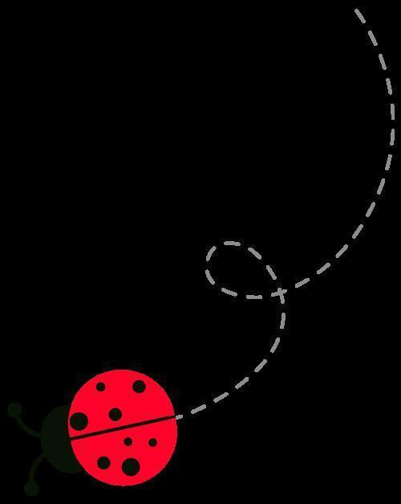
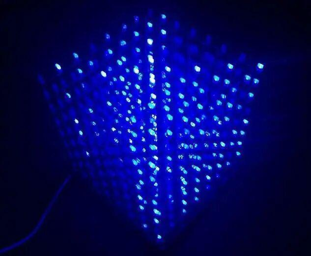
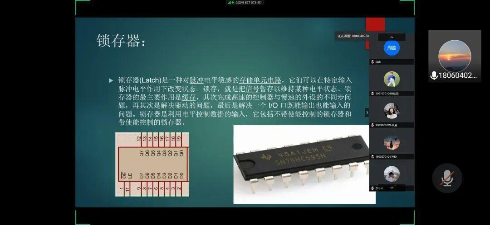
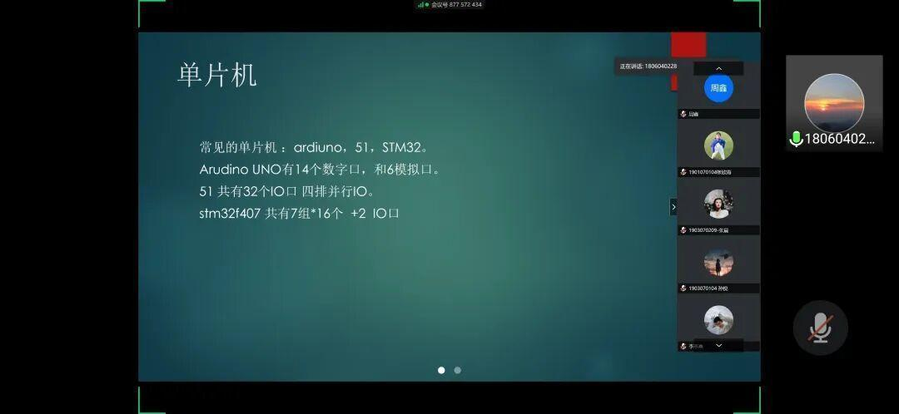
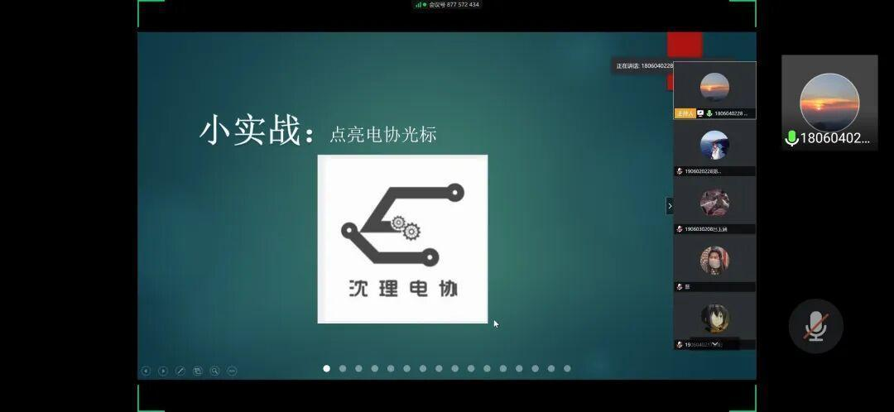
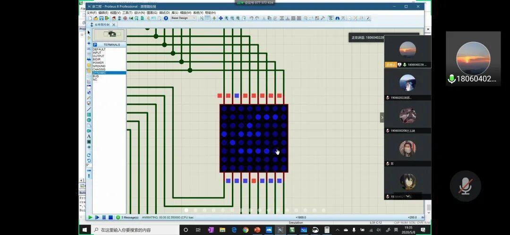
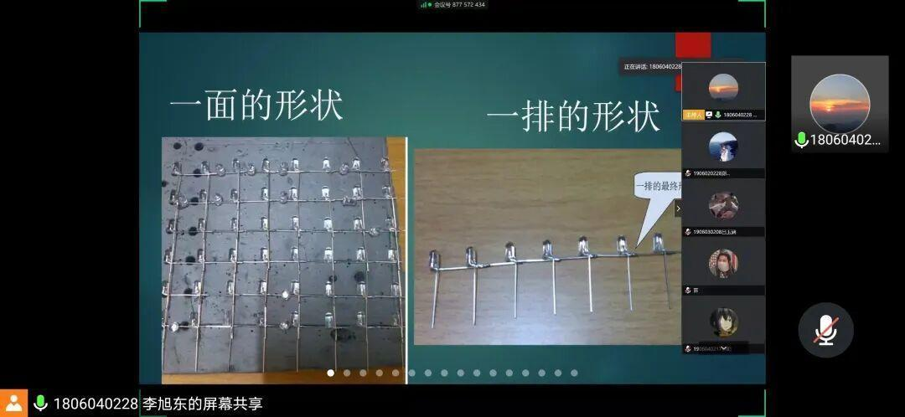
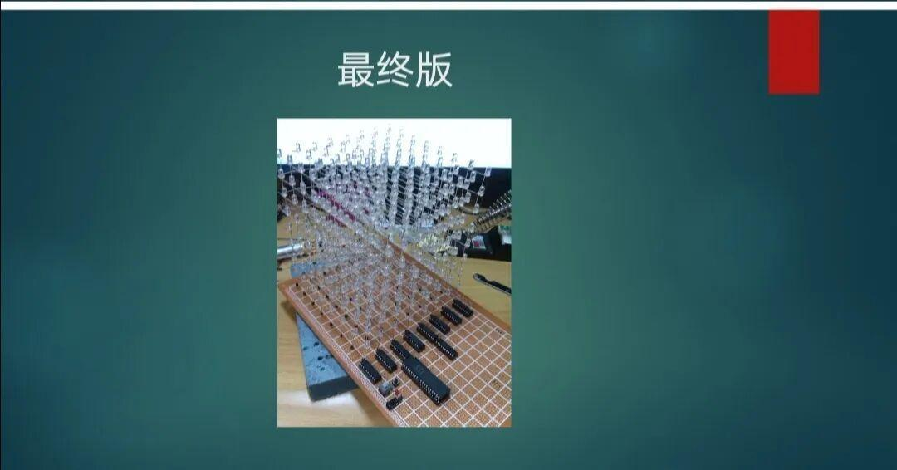

使用小程序
经过了五一小长假，我们迎来了电协的第二次教学，让我们一起来看看本次教学内容吧！

本周我们学习的内容是教大家如何制作炫酷的光立方，就像这样：

课程刚开始，学长先简单介绍了一下光立方、单片机、锁存器。


接着，进行了代码的编写、仿真与演示。


最后，讲解了光立方的实际操作流程，并强调了每一步操作的注意事项。


以上就是今天的学习内容，通过今天的学习，大家是不是已经跃跃欲试了呢？感兴趣的同学赶快动手试试吧！
排版|辛学敏
扫描下方二维码关注我们获取更多知识~